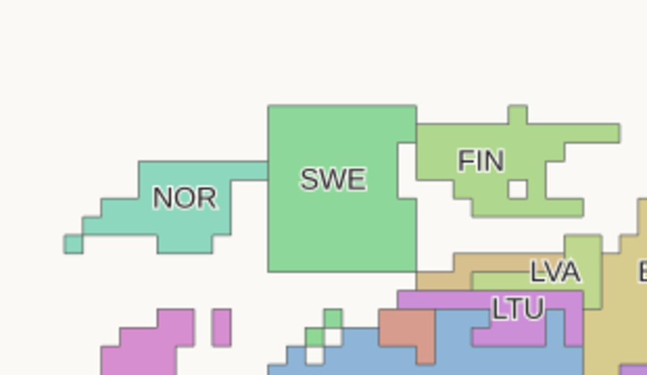
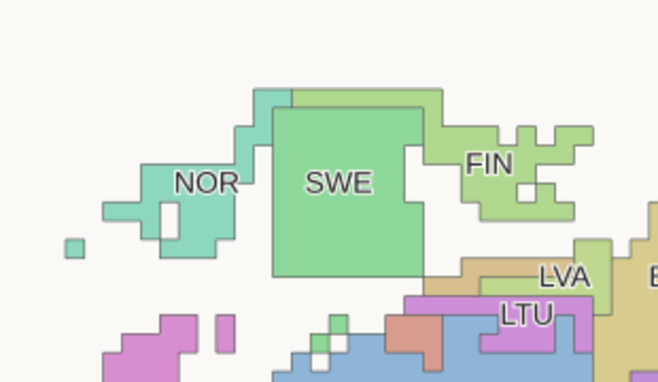
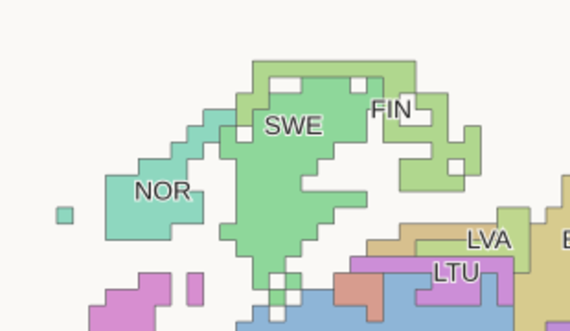
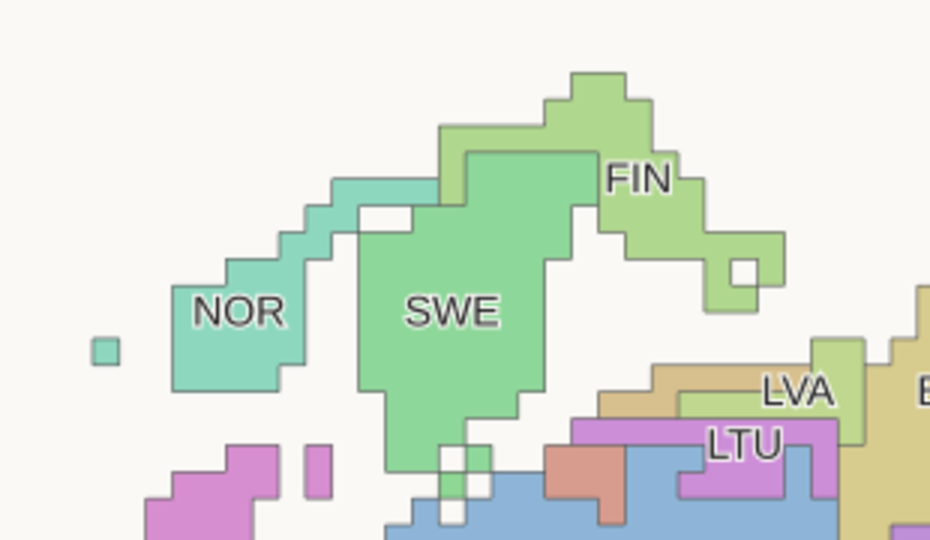
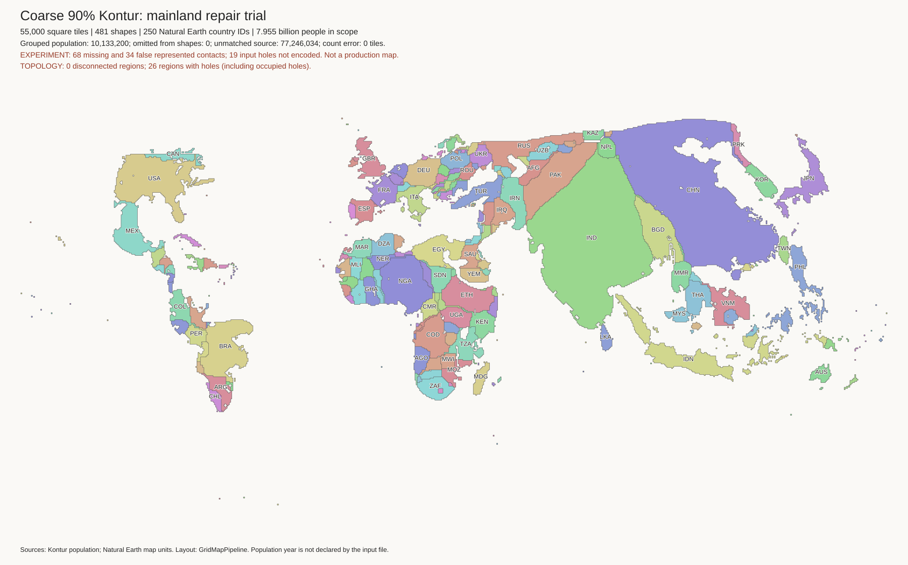
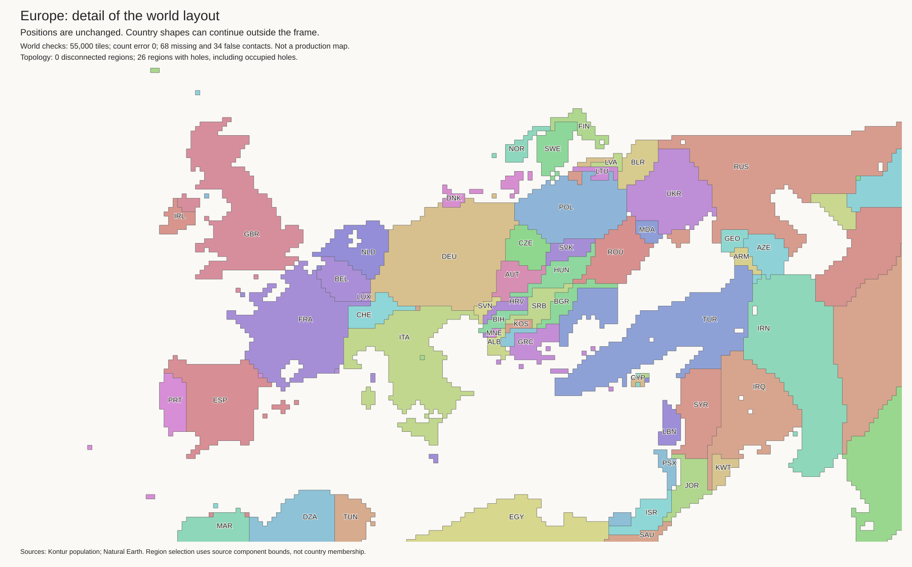
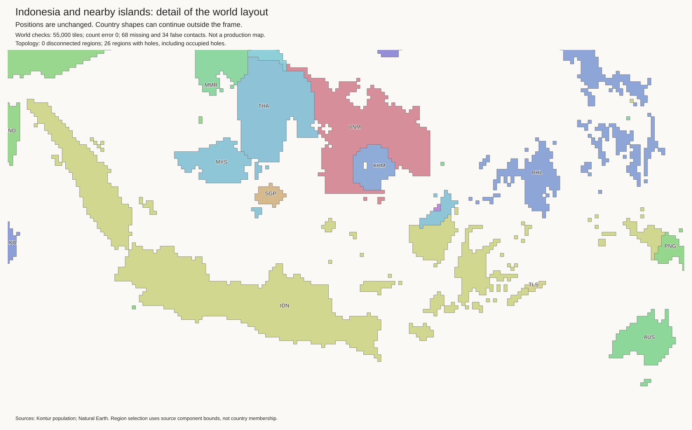
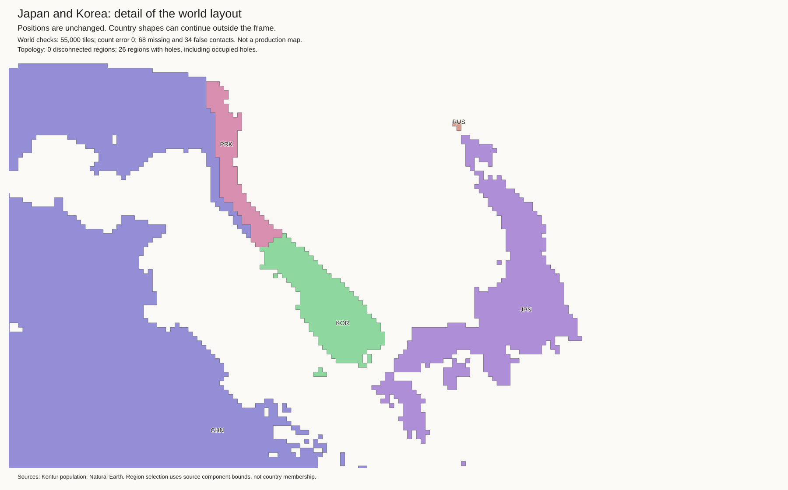
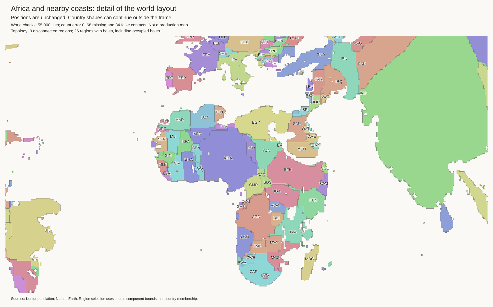

Research candidate. The current best and H3-MON data are unchanged. No strategic cuts.
All 55,000 tiles retain exact component budgets. All 481 components are connected. The 45 lakes use 220 empty cells. Lake shore checks pass.
| Check | Current best | Candidate |
|---|---|---|
| Finland touches Norway | True | True |
| Malaysia touches Thailand | False | True |
| Sweden touches Germany | True | False |
| Lithuania exterior-water edges | 0 | 2 |
| Paraguay exterior-water edges | 16 | 16 |
There are 68 missing and 34 false contacts. The current best has 73 and 48. The candidate gains 5 true contacts and loses 0. It removes 14 false contacts and adds 0. These totals do not prove correct geography.
Open issues include Paraguay's false coast, the Nordic shapes, and missing mainland connections. A coast can be mathematically valid but visually poor. Do not use this as a production map.
Checks and exact contact changes · Land tiles · Empty lake cells · Geographic audit
The final trial changes only the main Finland, Norway, and Sweden components. It restores Finland–Norway without losing other true borders or adding false borders. All lake cells are unchanged. Independent flood fills find no extra inland coast and no loss of coastal access. Comparison checks.

Moving the outside boundary makes the border feasible. But a thin strip crosses Sweden's northern edge. Run record.

The source tile shapes guide the fit. Binary template costs still permit long extensions. Run record.

The fit starts from the intermediate result. A squared distance cost discourages tiles far from their template. A perimeter cost discourages long narrow shapes. A two-cell reach keeps this refinement local. Sweden is no longer rectangular. Finland's perimeter falls from 70 to 52 tile edges; Sweden's falls from 60 to 42. Norway's rises from 34 to 36. These measurements do not prove correct shapes.
Norway still has a narrow section. Finland has an awkward extension around Lake Saimaa. These are unresolved shape defects. Paraguay is unchanged. Do not promote this trial. Run record.

Other Nordic trials and two Paraguay trials reached their time limits without feasible incumbents. This does not prove infeasibility. Other run records.





